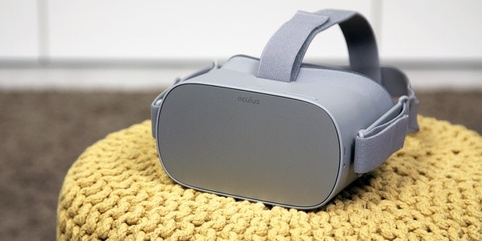

De omzetcijfers stegen volgens NPD Group iets minder sterk. Er werd een stijging genoteerd van 153 procent tijdens de eindejaarsperiode van 2021 en een stijging van de omzet in deze markt met 137 procent gedurende het hele jaar 2021. De eindejaarsperiode die NPD Group hanteert begon op 21 november 2021 en eindigde op 25 december 2021.
Volgens analist Ben Arnold is de stijging deels te danken aan de tekorten op de markt van de populaire spelconsoles, maar hij stelt ook dat consumenten unieke entertainmentervaringen opzochten. Arnold verwacht dat de omzetcijfers van VR- en AR-headsets tijdens de eerste helft van 2022 nog verder zullen doorstijgen.
